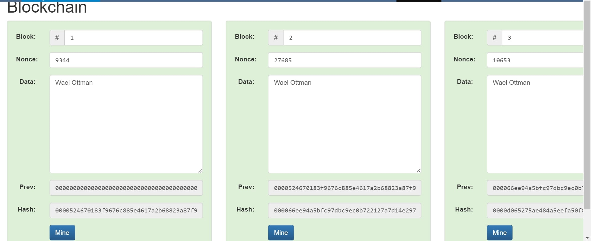
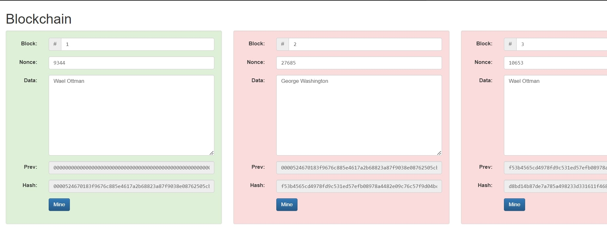

Services
Signiture Assignments
Signiture Assignment #1: Blockchain Assignment
Before
After
This assignment demonstrates the flow of cryptocurrency in the Blockchain network. In the before picture, it shows if all the information matches and if it does it would reach its destination. However, if one of the bitcoin block’s information changes, it would cut off the flow and would not reach its destination. That is being shown in the after picture. The skill I acquired is the understanding of the flow of crypto and the Blockchain network. The problem that I sold is to is the understanding of the blockchain. In the subject we keep hearing buzzwords, yet many do not understand what’s going on in the crypto world. I believe I helped people to understand this subject.
Signiture Assignment #2: Detroit Map Assignment
Before

After

I chose to work on the Detroit map assignment that I had in my Geographic Information class here at SPS. It’s a map showing the population of Detroit and how they got depopulated over the decades. The skills that I have developed in this assignment is to display data through visuals such as maps. I can use the skills for presentation purposes especially in corporate careers. What a change in a map was to Display the color more clearly as shown in the “after” picture. The colors or more vibrant and pop out more to show which places have more population and which places have less population. I can see myself using these skills since data is important and the best way to show it is visually.
Signiture Assignment #3: Bitcoin Block Assignment
Before

After

I’ve taken a Great interest in my Blockchain class here at SPS. One of my signature assignments was to search for a bitcoin transaction and open up a “bitcoin block”. A transaction would split up two “blocks” and would reassemble at the destination. What I improved from my assignment was that I found a new website which better displays the transaction. In the new website it shows the whole transaction and even has a flow chart showing all of the bitcoin blocks that’s associated with the transaction. It also has the timestamp, V, and she read all organized in a page. Unlike the old website that I was using it will give a lot of unnecessary information that would confuse the user. I’m glad I can go back and see what I can improve with my signature assignment.